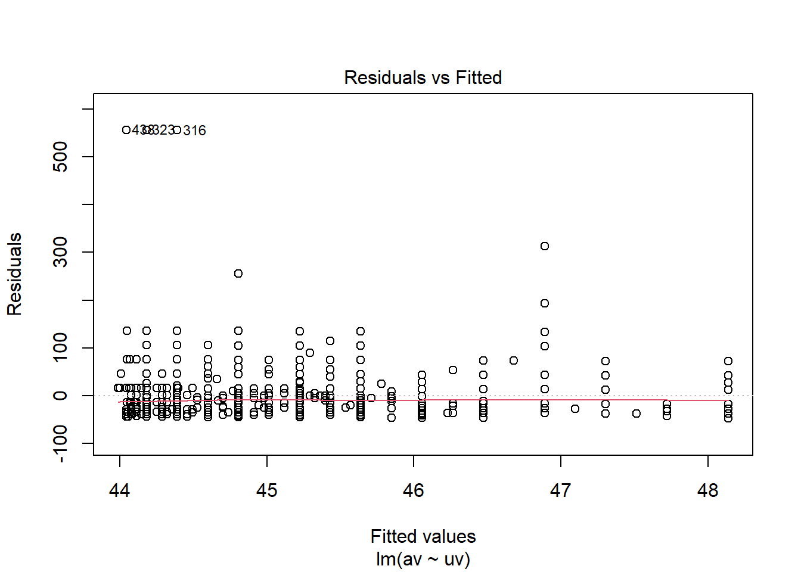
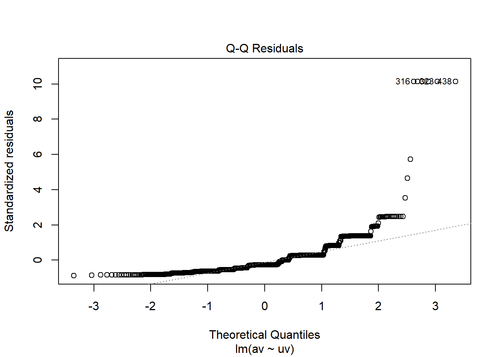

##Arbeitsverzeichnis checken
getwd()[1] "C:/Users/antje/Documents/studium PUK/Master-Publizistik/STUDIENASSISTENZ/Test Tutorial"Dieses Tutorial gibt eine Einführung in die bivariate lineare Regressionsanalyse. Sie lernen, wie man:
Wie immer prüfen wir zuerst mit “getwd()”, unter welchem Pfad unser Arbeitsverzeichnis ist. Alle Skripte und Datensätze, mit denen wir arbeiten wollen, sollten in diesem Ordner abgelegt sein.
##Arbeitsverzeichnis checken
getwd()[1] "C:/Users/antje/Documents/studium PUK/Master-Publizistik/STUDIENASSISTENZ/Test Tutorial"Dann laden wir wieder mit dem Paket “pacman” die nötigen R-Pakete.
##Pakete installieren und laden
if (!require("pacman")) {install.packages("pacman"); library(pacman)}Lade nötiges Paket: pacmanp_load(mosaic, knitr, tidyverse, broom, car, ggplot2, lmtest)Für diese Übung verwenden wir einen echten empirischen Datensatz aus dem European Social Survey: ESS Round 8 (2016): integrated file, edition 2.3, zu finden unter: https://ess-search.nsd.no/en/study/f8e11f55-0c14-4ab3-abde-96d3f14d3c76
Der ESS ist eine wissenschaftlich begleitete länderübergreifende Umfrage, die seit 2001 in ganz Europa durchgeführt wird. Alle zwei Jahre werden Face-to-Face-Interviews mit neu ausgewählten Querschnittsstichproben durchgeführt. Nähere Informationen über die Variablen und ihre Kodierung finden sich im zugehörigen Codebuch, welches mit den Daten zur Verfügung gestellt wird.
#Datensatz laden
df <- read.csv("data/ESS8e02_3.csv")#Datensatz inspizieren
class(df)
dim(df)
head(df)
glimpse(df)Der Datensatz ist sehr groß, weshalb wir ihn im nächsten Schritt filtern. Uns interessieren nur die Datensätze von österreichischen Befragten (cntry==AT). Außerdem verwenden wir für die weitere Analyse nur die Auswahl folgender Variablen/Spalten: Gender (gndr), Age of respondent calculated (agea), News about politics and current affairs (nwspol), Internet use (netustm), Confident in own ability to participate (cptppola).
Wir legen mit dem Operator %>% eine Pfeife an und nutzen hier nacheinander die Funktionen “filter” für die Auswahl der Fälle/Zeilen und “select” für die Auswahl der Variablen/Spalten aus dem tidyverse-Paket. Da der Name der Funktion “select” nicht eindeutig ist, müssen wir R mit “dplyr::select” einen konkreten Hinweis geben, damit es die select-Funktion aus dem Paket “dplyr” (welches Teil des tidyverse ist) verwendet. Ansonsten kann es zu Fehlermeldungen aufgrund von Konflikten mit anderen Paketen kommen.
#Fälle filtern und Variablen auswählen
df_at <- df %>%
filter(cntry == "AT") %>%
dplyr::select(idno, gndr, agea, nwspol, netustm, cptppola)
glimpse(df_at)Rows: 2,010
Columns: 6
$ idno <int> 1, 2, 4, 6, 10, 11, 12, 13, 14, 15, 16, 17, 18, 19, 21, 22, 2…
$ gndr <int> 2, 1, 2, 1, 2, 2, 2, 2, 2, 2, 2, 1, 1, 2, 2, 1, 1, 1, 2, 2, 2…
$ agea <int> 34, 52, 68, 54, 20, 65, 52, 44, 22, 41, 57, 61, 50, 31, 58, 2…
$ nwspol <int> 120, 120, 30, 30, 30, 60, 15, 45, 10, 60, 30, 90, 15, 30, 20,…
$ netustm <int> 180, 120, 6666, 120, 180, 120, 6666, 30, 120, 120, 6666, 90, …
$ cptppola <int> 3, 3, 2, 4, 1, 2, 1, 2, 2, 2, 1, 3, 1, 2, 1, 2, 4, 3, 1, 2, 1…head(df_at) idno gndr agea nwspol netustm cptppola
1 1 2 34 120 180 3
2 2 1 52 120 120 3
3 4 2 68 30 6666 2
4 6 1 54 30 120 4
5 10 2 20 30 180 1
6 11 2 65 60 120 2Mit View() können wir uns den gefilterten Datensatz im Dateneditor anschauen. Damit wir in zukünftigen Übungen direkt mit dem österreichischen Teildatensatz arbeiten können, schreiben wir den Dataframe “df_at” mit dem folgenden Befehl in einen csv-File. Dieser wird autmatisch im Arbeitsverzeichnis abgelegt.
View(df_at)
write.csv(df_at, file = "data/ESS8e02_3_AT.csv")Wir wollen prüfen, welchen Einfluss die Internetnutzung der Befragten (netustm) auf ihre politische Nachrichtennutzung (nwspol) hat. Die Variable “netustm” ist also unsere unabhängige Variable (UV,Prädiktor), die Variable “nwspol” unsere abhängige Variable (AV, Kriterium). Beide Variablen sind metrisch, was den Voraussetzungen für eine Regressionsanalyse entspricht. Sowohl Internetnutzung (UV) als auch der politische Nachrichtenkonsum (AV) wurde in Minuten gemessen.
Nullhypothese H0: Die Internetnutzung der Befragten hat keinen Einfluss auf ihren politischen Nachrichtenkonsum.
Alternativhypothese H1: Je länger die Befragen das Internet nutzen, desto mehr politische Nachrichten konsumieren sie.
Mit dem unten stehenden Code, der Ihnen aus den vorigen Übungen bekannt ist, definieren wir unsere UV und AV und vergeben die zugehörigen Labels.
UV Internetnutzung (netustm) und AV politische Nachrichtennutzung (nwspol)
#UV und AV definieren
df_at$uv <- df_at$netustm
df_at$av <- df_at$nwspol
#Labels vergeben
label_av <- "Politischer Nachrichtenkonsum"
label_uv <- "Internetnutzung"
glimpse(df_at)Rows: 2,010
Columns: 8
$ idno <int> 1, 2, 4, 6, 10, 11, 12, 13, 14, 15, 16, 17, 18, 19, 21, 22, 2…
$ gndr <int> 2, 1, 2, 1, 2, 2, 2, 2, 2, 2, 2, 1, 1, 2, 2, 1, 1, 1, 2, 2, 2…
$ agea <int> 34, 52, 68, 54, 20, 65, 52, 44, 22, 41, 57, 61, 50, 31, 58, 2…
$ nwspol <int> 120, 120, 30, 30, 30, 60, 15, 45, 10, 60, 30, 90, 15, 30, 20,…
$ netustm <int> 180, 120, 6666, 120, 180, 120, 6666, 30, 120, 120, 6666, 90, …
$ cptppola <int> 3, 3, 2, 4, 1, 2, 1, 2, 2, 2, 1, 3, 1, 2, 1, 2, 4, 3, 1, 2, 1…
$ uv <int> 180, 120, 6666, 120, 180, 120, 6666, 30, 120, 120, 6666, 90, …
$ av <int> 120, 120, 30, 30, 30, 60, 15, 45, 10, 60, 30, 90, 15, 30, 20,…Wenn wir den Datensatz genauer inspizieren (z.B. indem wir “View()” in die Konsole eingeben), sehen wir, dass unsere Variablen teils sehr hohe Werte außerhalb des gültigen Wertebereichs enthalten, wie z.B. 7777, 8888 oder 9999. Solche Werte werden üblicherweise verwendet, um fehlende Werte zu kennzeichnen. Ein Blick ins Codebuch zeigt uns auch, was diese Werte für die UV “nwspol” bedeuten: 7777 = Refusal, 8888 = Don’t know, 9999 = No answer. Alle werden als “missing values” gekennzeichnet. Für die AV “netustm” sind die die fehlenden Werte: 66666 = not applicable 7777 = Refusal, 8888 = Don’t know und 9999 = No answer.
Diese Information geben wir nun R, indem wir die UV und die AV so umkodieren, dass für die fehlenden Werte jeweils “NA” eingetragen wird.
#Fehlende Werte umkodieren
df_at$uv <- Recode((df_at$uv),
'6666 = NA; 7777 = NA; 8888 = NA; 9999 = NA')
df_at$av <- Recode((df_at$av),
'7777 = NA; 8888 = NA; 9999 = NA')Nun lassen wir uns zunächst mit der Funktion “favstats” die wichtigsten deskriptiven Statistiken für die UV und die AV ausgeben.
#Deskriptive Statistiken
des_stats <- rbind("Internetnutzung" = favstats(df_at$uv, na.rm = T), "Politischer Nachrichtenkonsum" = favstats(df_at$av, na.rm = T))
kable(des_stats, digits=2, col.names = c("Minimum", "Q1", "Median","Q3", "Maximum", "Mittelwert", "SD", "n", "Fehlend"))| Minimum | Q1 | Median | Q3 | Maximum | Mittelwert | SD | n | Fehlend | |
|---|---|---|---|---|---|---|---|---|---|
| Internetnutzung | 2 | 60 | 120 | 180 | 600 | 138.98 | 109.18 | 1266 | 744 |
| Politischer Nachrichtenkonsum | 0 | 20 | 30 | 60 | 630 | 48.73 | 54.66 | 1973 | 37 |
In der Statistik werden uns auch für beide Variablen die Zahl der jeweils gültigen (n) und fehlenden Werte angegeben.
Für die weiteren Analysen wollen wir die Fälle mit fehlenden Werten ausschließen. Dies erreichen wir wieder mit der Funktion “drop_na”, die wir auf beide Variablen, UV und AV, anwenden. Es werden also alle Fälle ausgeschlossen, die fehlende Werte in der UV oder AV aufweisen.
#Fälle mit fehlenden Werten ausschließen
df_at <- drop_na(df_at, uv, av)Um einen ersten Eindruck über die Verteilungen der Daten zu gewinnen, erstellen wir Boxplots für die AV und die UV.
boxplot(df_at$av, main = label_av)
boxplot(df_at$uv, main = label_uv)
Eine wichtige Voraussetzung für die Regressionsanalyse ist eine lineare Beziehung zwischen UV und AV. Um dies zu beurteilen, erstellen wir mit der Funktion “ggplot” aus dem Paket “ggplot2” ein Streudiagramm (Scatterplot), mit dem der Zusammenhang zwischen zwei Variablen visualisiert wird. In diesem werden alle Fälle als Punkte in einem zweidimensionalen Koordinatensystem dargestellt. Auf der x-Achse tragen wir die Werte der AV, auf der y-Achse die Werte der UV ab (andersherum ist es genauso möglich). Jeder Datenpunkt repräsentiert also ein Wertepaar der beiden Variablen.
Zunächst legen wir mit “ggplot” das Grafikobjekt “scatter” an und weisen diesem die wichtigsten Informationen über die verwendeten Daten (df_at) und die Variablen für den Plot zu. Das Argument “aes” steht für “aesthetic mapping”. Mit ihm ordnen wir die AV der x-Achse und die UV der y-Achse zu.
Dann verwenden wir dieses Objekt und fügen ihm weitere Elemente hinzu:
scatter <- ggplot(df_at, aes(av, uv))
scatter + geom_point() + geom_smooth(method = "lm") + labs(x = label_av, y = label_uv)`geom_smooth()` using formula = 'y ~ x'
Wir können durchaus einen, wenn auch schwachen, linearen Trend in den Daten erkennen. Es macht also Sinn mit der linearen Regressionsanalyse fortzufahren.
Um die Regression durchzuführen, verwenden wir die Funktion “lm” (linear model) und weisen sie einem Objekt zu, welches wir “model” nennen. Die AV fügen wir vor der Tilde, die UV hinter der Tilde ein. Als Datensatz verwenden wir wieder “df_at”. Anschließend wenden wir die Funktion “summary” auf das Objekt “model” an. Damit erhalten wir die Zusammenfassung der Ergebnisse.
model <- lm(av ~ uv, data = df_at)
summary(model)
Call:
lm(formula = av ~ uv, data = df_at)
Residuals:
Min 1Q Median 3Q Max
-48.14 -29.81 -14.81 15.19 555.96
Coefficients:
Estimate Std. Error t value Pr(>|t|)
(Intercept) 43.972100 2.509002 17.526 <0.0000000000000002 ***
uv 0.006946 0.014156 0.491 0.624
---
Signif. codes: 0 '***' 0.001 '**' 0.01 '*' 0.05 '.' 0.1 ' ' 1
Residual standard error: 54.85 on 1246 degrees of freedom
Multiple R-squared: 0.0001932, Adjusted R-squared: -0.0006093
F-statistic: 0.2407 on 1 and 1246 DF, p-value: 0.6238Im Output sehen wir zuerst noch einmal unseren Aufruf (Call), dann deskriptive Statistiken über die Residuen (Residuals) und danach die Koeffizienten und die zugehörigen Statistiken (Coefficients). In der Tabelle der Koeffizienten finden wir in der ersten Spalte (Estimate) die unstandardisierten Regressionskoeffizienten, dann die Standardfehler, t-Werte und die korrespondierenden p-Werte, die uns sagen, ob die Regressionskoeffizienten signifikant sind.
Mit der Information in der ersten Spalte können wir unsere Regressionsgerade zusammenstellen.
y = 43.972100 + 0.006946x
Inhaltlich bedeutet dies, dass mit jeder Minute Internetnutzung der politische Nachrichtenkonsum um einen Skalenpunkt steigt. Dieser Effekt ist aber mit p<0.001 höchst signifikant.
Unter der Tabelle fügt R weitere Informationen zum Standardfehler der Residuen, zur Güte des Modells (R-Quadrat) und die F-Statistik zum zugehörigen Regressionsmodell bei. Hier interessieren uns v.a. die Informationen zum R-Quadrat.
Wir erhalten beides, das (multiple) R-Quadrat sowie das korrigierte R-Quadrat. Wir berichten immer das korrigierte R-Quadrat! Es gibt uns an, wieviel der Varianz in der AV durch unser Regressionsmodell erklärt wird. Unser Modell erklärt nur fast 100% der Gesamtvarianz in unseren Daten. Das ist sehr wenig.
Die Regressionsanalyse ist einerseits voraussetzungsreich, andererseits aber auch sehr robust gegen Verletzungen ihrer Voraussetzungen. Dies bedeutet, dass es meist nicht weiter schlimm ist, wenn einige der Voraussetzungen zumindest etwas verletzt werden. Die Prüfung sollte aber vorgenommen und berichtet werden.
Es gibt drei weitere Voraussetzungen, die wir anhand einer Analyse der Residuen überprüfen. Dies sind jeweils die Abweichungen unserer Beobachtungen zur Regressionsgerade, also die Fehlervarianz, die nicht durch unser Regressionsmodell erklärt wird. Hierzu stellt uns R vier Plots zur Verfügung, die wir ganz einfach mit der Funktion “plot” aufrufen können, wenn wir sie auf unserem zuvor berechneten Modell “model” ausführen.
plot(model)



Homoskedastizität: Wie bei der Varianzanalyse soll es keine systematischen Unterschiede in der Varianz geben. Dies prüfen wir bei der Regressionsanalyse anhand der Residuen. Diese sollen keine systematische Varianz mehr aufweisen. Dies prüfen wir anhand der Plots 1 und 3, die jeweils die Residuen gegenüber den vorhergesagten Werten (fitted values) abtragen. Idealerweise verteilen sich die Punkte in beiden Plots gleichmäßig um die rote Linie. In Plot 1 sollen die Residuen zudem einen Mittelwert von 0 aufweisen. In unserem Beispiel sehen wir leider Abweichungen gerade im höheren Wertebereich.
Normalverteilung der Residuen: Auch sollen die Residuen möglichst normalverteilt sein. Dies prüfen wir anhand des Q-Q-Plots (Plot 2), der die Quartile der standardisierten Residuen gegenüber den Quartilen der Normalverteilung abträgt. Hier sollen die Punkte möglichst nah an der roten Linie bleiben. Für unsere Daten sehen wir, dass die Daten im Großen und Ganzen dem Trend der roten Linie folgen, teilweise jedoch deutlich davon abweichen.
Ausreißeranalyse: Ausreißer können die Ausrichtung der Regressionsgerade übermäßig verschieben. Es ist wichtig zu prüfen, ob Ausreißer bestehen und ob diese inhaltlich Sinn machen. Wenn es sich um fehlerhafte Werte handelt, sind diese zu löschen. Ausreißer haben wir bereits mit Hilfe der Boxplots identifizieren können. Zusätzlich gibt uns Plot 4 Informationen über den Einfluss möglicher Ausreißer auf das Regressionsmodell: zum einen gibt der Leverage-Wert auf der x-Achse des Plots Information über die Hebelwirkung einzelner Werte und bestimmt sich danach, wie weit der Wert einer UV von anderen Werten entfernt liegt. Ein hoher Hebelwert bedeutet, dass sich in der Nähe dieses Falls keine weiteren Fälle befinden und dieser daher potenziell großen Einfluss auf das gesamte Regressionsmodell hat. Plot 4 hebt jweils die drei Datenpunkte mit der höchsten Hebelwirkung hervor. Ein weiterer Anhaltspunkt ist Cook’s Distance: diese bezieht sich auf das Ausmaß, in dem sich die Koeffizienten im Modell ändern würden, wenn ein bestimmter Fall aus dem Datensatz entfernt würde. Problematisch sind Werte, die außerhalb (hier unterhalb) der grauen gestrichelten Linie liegen, in unserem Beispiel bei 3 Standardabweichungen. In unserem Beispiel liegen alle Werte oberhalb der gestrichelten Linie und sind daher nicht problematisch.
Um die Sichtprüfung der Plots abzusichern, lassen sich zusätzlich Tests auf Homoskedastizität (Breusch-Pagan Test) und Normalverteilung (Shapiro-Wilk) der Residuen durchführen.
bptest(model)
studentized Breusch-Pagan test
data: model
BP = 2.0285, df = 1, p-value = 0.1544#Breusch-Pagan Test auf Homoskedastizität
shapiro.test(residuals(model))
Shapiro-Wilk normality test
data: residuals(model)
W = 0.58191, p-value < 0.00000000000000022#Test auf Normalverteilung der ResiduenBeide Tests werden in unserem Fall signifikant, d.h. die beiden Annahmen der Homoskedastizität und der Normalverteilung der Residuen werden verletzt. Nun kann man entweder mit dem Hinweis auf die Robustheit der Regressionsanalyse auf Verletzung ihrer Annahmen dennoch die Ergebnisse der Regressionsanalyse berichten, oder man sichert die Analyse zusätzlich durch Bootstrapping ab.
Beim Bootstrapping werden aus den vorhandenen Daten Zufallsstichproben gezogen, und zwar viele tausend Male. Basierend auf diesen Bootstrap-Samples erhalten wir eine Verteilung der Schätzungen für jeden Parameter unseres Regressionsmodells und können dafür die Konfidenzintervalle berechnen. Damit erhalten wir Informationen über die Streuung und Unsicherheit unserer Schätzwerte.
In R können wir Bootstrapping mit der Funktion “Boot” aus dem Paket “car” anwenden. Diese Funktion erzeugt die Bootstrap-Samples aus den Originaldaten und berechnet zu jedem dieser Samples eine Regression. Wir müssen lediglich in den Argumenten zum Befehl “Boot” unser Orginalmodell (“model”) spezifizieren und die Zahl der gewünschten Wiederholungen (R = 2000) angeben. Alle erzeugten Bootstraps speichern wir in einem Objekt mit dem Namen “bootReg”.
Die Funktion “summary” gibt uns dann eine Zusammenfassung über das Bootstrapping. Zusätzlich berechnen wir mit der Funktion “confint()” die Konfidenzintervalle für die Bootstrap-Regressionskoeffizienten. Wir geben zwei Argumente an: das Objekt “bootReg”, für das die Koeffizienten berechnet werden sollen und das gewünschte Konfidenzniveau “level = 0.95”.
#Alternativ: Bootstrapping!
bootReg <- Boot(model, R=2000)Lade nötigen Namensraum: bootsummary(bootReg)
Number of bootstrap replications R = 2000
original bootBias bootSE bootMed
(Intercept) 43.9721000 -0.0423167 2.983652 43.8387510
uv 0.0069455 0.0001328 0.014793 0.0075961confint(bootReg, level = 0.95)Bootstrap bca confidence intervals
2.5 % 97.5 %
(Intercept) 38.98228978 51.12155187
uv -0.02339719 0.03526465In der Interpretation konzentrieren wir uns auf die Konfidenzintervalle des Bootstrappings. Im ausgegebenen Dataframe sehen wir die unteren und oberen Grenzen der Konfidenzintervalle für jeden Koeffizienten. Dies zeigt den Bereich an, in den der jeweilige Parameter mit großer Sicherheit fällt. Wenn ein 95%-Konfidenzintervall 0 nicht mit einschließt, können wir davon ausgehen, dass der Koeffizient auf einem Signifikanzniveau von .05 signifikant ist. Dies ist bei unserem Beispiel der Fall. Wir haben also unsere Regressionsanalyse zusätzlich mit Bootstrapping abgesichert.
Kapitel 7 in: Fields, A. (2012). Discovering Statistics Using R. Sage.
Jetzt sind Sie dran! Prüfen Sie mit einer einfachen Regressionsanalyse anhand desselben Datensatzes, ob die Internetnutzung der Befragten (netustm) einen Einfluss auf das Vertrauen in ihre eigenen Fähigkeiten zur politischen Partizipation hat (cptppola).
#UVs und AV definierenAntwort: …
#Deskriptive Statistiken
#Ausschluss von Fällen mit fehlenden WertenAntwort:…
#Streudiagramm erstellenAntwort: …
#Regressionsanalyse durchführenAntwort: …
#Wichtig! Speichern Sie das angepasste Markdown mit einem Dateinamen nach dem folgenden Muster: Nachname_Übung5.Rmd Laden Sie diese Datei in den dafür vorgesehenen Ordner in Moodle.